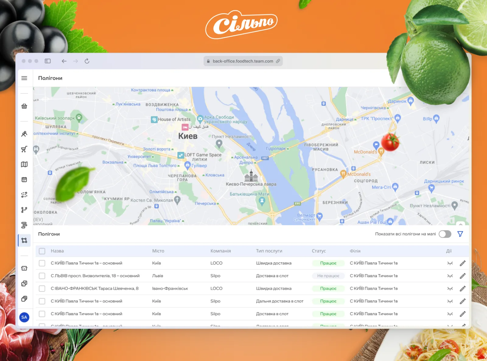
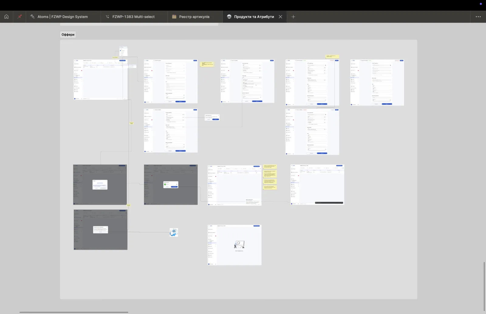

Silpo ERM — a 9-module enterprise platform.
A centralised ERM system for Ukraine’s top-5 retailer, covering everything from order administration and supplier collaboration to logistics, loyalty and promotion management — nine modules, dozens of stakeholders, one consistent interface language.

One platform for an entire retailer.
Silpo is part of Fozzy Group — Ukraine’s 5th largest private company and operator of 830+ stores. The internal e-commerce operations had grown across multiple tools and teams: marketers ran promotions in one place, accountants reconciled in another, couriers worked in a third, and BAs spent their week translating between them.
The ERM was meant to unify all of that — order administration, supplier collaboration, logistics, promotions, loyalty — into a single platform with a coherent interface language across nine business modules.
Scenario maps and atomic design, plus a lot of listening.
My input started after the business analysts and product owners identified what to optimise — I took their requirements and translated them into something operators actually wanted to use. The toolkit was familiar but the scale was unusual.
- Stakeholder & user researchInterviews and surveys with managers and frontline employees across departments. Usability tests on prototypes.
- Competitor analysisShopify, Etsy, Odoo — for IA patterns, dashboard density and admin-tool conventions.
- Scenario mapsUsed to structure each business process into navigable flows before any pixels.
- Atomic design systemShared UI kit applied across nine modules — standardised components, faster delivery for engineering.
- Cross-functional ritualsWeekly syncs across teams, Jira + Confluence + Slack as the source of truth, Scrum cadence.
Nine modules, one interface language.
- E-commerceOrders (CRUD + status tracking) and promotions (campaign tooling for marketers).
- GEOAddress inquiries and delivery accuracy tooling.
- BillingAccounting automation, invoicing, payment monitoring.
- COREProduct catalog, characteristics, services per branch, users.
- PaymentsTransactions with merchants, business operations.
- LoyaltyPartner programmes, B2B participation, operations.
- CityRyderCourier management, routing, monitoring, geozonal planning, compensation engine.
- DAMSInventory transfers, expiration monitoring, KPI panels and staff schedules.
- ProfileEmployees and role-based access.
On top of the module work, I co-led the design system that all nine modules used — and I acted as the mediator between designers, engineering, QA, PO and BA when conflicts came up.

A 34% drop in operational errors — and four moving KPIs.
The headline result was the error reduction, but four secondary KPIs moved in the right direction as well.
- CR — Conversion RateOrder conversion up after checkout optimisation.
- TAT — Turnaround TimeOrder processing time down through automation.
- ABR — Abandonment RateDrop-offs reduced via UX improvements.
- NPSCustomer loyalty score up.
Five things I would tell my Day-1 self.
- Cross-team communication is the projectWhen nine modules touch five departments, alignment is the deliverable.
- Plan flexibly, ship iterativelyA multi-stage rollout will get re-prioritised. Build the rhythm to adapt.
- Test on prototypes, not on prodCatching IA issues in interactive prototypes is a 10× cheaper bug fix.
- Train the operatorsAdoption is part of the design. Without sessions and support, no UX redesign sticks.
- Make feedback an instrumentCollect, route, close the loop. Otherwise it dissipates.
If you liked this, also see…
Found this through Upwork?
Then you already know where to reach me. Send the brief through your Upwork job post or an invite — I usually reply within a working day.